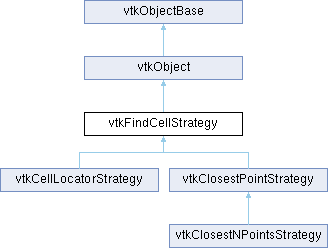

|
Etrek
|
|
Etrek
|
helper class to manage the vtkPointSet::FindCell() method More...
#include <vtkFindCellStrategy.h>

Public Member Functions | |
| virtual int | Initialize (vtkPointSet *ps) |
| virtual vtkIdType | FindCell (double x[3], vtkCell *cell, vtkGenericCell *gencell, vtkIdType cellId, double tol2, int &subId, double pcoords[3], double *weights)=0 |
| virtual vtkIdType | FindClosestPointWithinRadius (double x[3], double radius, double closestPoint[3], vtkGenericCell *cell, vtkIdType &cellId, int &subId, double &dist2, int &inside)=0 |
| virtual bool | InsideCellBounds (double x[3], vtkIdType cellId)=0 |
| virtual void | CopyParameters (vtkFindCellStrategy *from) |
| vtkTypeMacro (vtkFindCellStrategy, vtkObject) | |
| void | PrintSelf (ostream &os, vtkIndent indent) override |
| Public Member Functions inherited from vtkObject | |
| vtkBaseTypeMacro (vtkObject, vtkObjectBase) | |
| virtual void | DebugOn () |
| virtual void | DebugOff () |
| bool | GetDebug () |
| void | SetDebug (bool debugFlag) |
| virtual void | Modified () |
| virtual vtkMTimeType | GetMTime () |
| void | PrintSelf (ostream &os, vtkIndent indent) override |
| void | RemoveObserver (unsigned long tag) |
| void | RemoveObservers (unsigned long event) |
| void | RemoveObservers (const char *event) |
| void | RemoveAllObservers () |
| vtkTypeBool | HasObserver (unsigned long event) |
| vtkTypeBool | HasObserver (const char *event) |
| vtkTypeBool | InvokeEvent (unsigned long event) |
| vtkTypeBool | InvokeEvent (const char *event) |
| std::string | GetObjectDescription () const override |
| unsigned long | AddObserver (unsigned long event, vtkCommand *, float priority=0.0f) |
| unsigned long | AddObserver (const char *event, vtkCommand *, float priority=0.0f) |
| vtkCommand * | GetCommand (unsigned long tag) |
| void | RemoveObserver (vtkCommand *) |
| void | RemoveObservers (unsigned long event, vtkCommand *) |
| void | RemoveObservers (const char *event, vtkCommand *) |
| vtkTypeBool | HasObserver (unsigned long event, vtkCommand *) |
| vtkTypeBool | HasObserver (const char *event, vtkCommand *) |
| template<class U, class T> | |
| unsigned long | AddObserver (unsigned long event, U observer, void(T::*callback)(), float priority=0.0f) |
| template<class U, class T> | |
| unsigned long | AddObserver (unsigned long event, U observer, void(T::*callback)(vtkObject *, unsigned long, void *), float priority=0.0f) |
| template<class U, class T> | |
| unsigned long | AddObserver (unsigned long event, U observer, bool(T::*callback)(vtkObject *, unsigned long, void *), float priority=0.0f) |
| vtkTypeBool | InvokeEvent (unsigned long event, void *callData) |
| vtkTypeBool | InvokeEvent (const char *event, void *callData) |
| virtual void | SetObjectName (const std::string &objectName) |
| virtual std::string | GetObjectName () const |
| Public Member Functions inherited from vtkObjectBase | |
| const char * | GetClassName () const |
| virtual vtkTypeBool | IsA (const char *name) |
| virtual vtkIdType | GetNumberOfGenerationsFromBase (const char *name) |
| virtual void | Delete () |
| virtual void | FastDelete () |
| void | InitializeObjectBase () |
| void | Print (ostream &os) |
| void | Register (vtkObjectBase *o) |
| virtual void | UnRegister (vtkObjectBase *o) |
| int | GetReferenceCount () |
| void | SetReferenceCount (int) |
| bool | GetIsInMemkind () const |
| virtual void | PrintHeader (ostream &os, vtkIndent indent) |
| virtual void | PrintTrailer (ostream &os, vtkIndent indent) |
| virtual bool | UsesGarbageCollector () const |
Protected Attributes | |
| bool | OwnsLocator |
| bool | IsACopy |
| vtkPointSet * | PointSet |
| double | Bounds [6] |
| vtkTimeStamp | InitializeTime |
| Protected Attributes inherited from vtkObject | |
| bool | Debug |
| vtkTimeStamp | MTime |
| vtkSubjectHelper * | SubjectHelper |
| std::string | ObjectName |
| Protected Attributes inherited from vtkObjectBase | |
| std::atomic< int32_t > | ReferenceCount |
| vtkWeakPointerBase ** | WeakPointers |
Additional Inherited Members | |
| Static Public Member Functions inherited from vtkObject | |
| static vtkObject * | New () |
| static void | BreakOnError () |
| static void | SetGlobalWarningDisplay (vtkTypeBool val) |
| static void | GlobalWarningDisplayOn () |
| static void | GlobalWarningDisplayOff () |
| static vtkTypeBool | GetGlobalWarningDisplay () |
| Static Public Member Functions inherited from vtkObjectBase | |
| static vtkTypeBool | IsTypeOf (const char *name) |
| static vtkIdType | GetNumberOfGenerationsFromBaseType (const char *name) |
| static vtkObjectBase * | New () |
| static void | SetMemkindDirectory (const char *directoryname) |
| static bool | GetUsingMemkind () |
| Protected Member Functions inherited from vtkObject | |
| void | RegisterInternal (vtkObjectBase *, vtkTypeBool check) override |
| void | UnRegisterInternal (vtkObjectBase *, vtkTypeBool check) override |
| void | InternalGrabFocus (vtkCommand *mouseEvents, vtkCommand *keypressEvents=nullptr) |
| void | InternalReleaseFocus () |
| Protected Member Functions inherited from vtkObjectBase | |
| virtual void | ReportReferences (vtkGarbageCollector *) |
| vtkObjectBase (const vtkObjectBase &) | |
| void | operator= (const vtkObjectBase &) |
| Static Protected Member Functions inherited from vtkObjectBase | |
| static vtkMallocingFunction | GetCurrentMallocFunction () |
| static vtkReallocingFunction | GetCurrentReallocFunction () |
| static vtkFreeingFunction | GetCurrentFreeFunction () |
| static vtkFreeingFunction | GetAlternateFreeFunction () |
helper class to manage the vtkPointSet::FindCell() method
vtkFindCellStrategy is a helper class to manage the use of locators for locating cells containing a query point x[3], the so-called FindCell() method. The use of vtkDataSet::FindCell() is a common operation in applications such as streamline generation and probing. However, in some dataset types FindCell() can be implemented very simply (e.g., vtkImageData) while in other datasets it is a complex operation requiring supplemental objects like locators to perform efficiently. In particular, vtkPointSet and its subclasses (like vtkUnstructuredGrid) require complex strategies to efficiently implement the FindCell() operation. Subclasses of the abstract vtkFindCellStrategy implement several of these strategies.
The are two key methods to this class and subclasses. The Initialize() method negotiates with an input dataset to define the locator to use: either a locator associated with the input dataset, or possibly an alternative locator defined by the strategy (subclasses of vtkFindCellStrategy do this). The second important method, FindCell() mimics vtkDataSet::FindCell() and can be used in place of it.
Note that vtkFindCellStrategy is in general not thread-safe as the strategies contain state used to accelerate the search process. Hence if multiple threads are attempting to invoke FindCell(), each thread needs to have its own instance of the vtkFindCellStrategy.
|
virtual |
Copy essential parameters between instances of this class. This generally is used to copy from instance prototype to another, or to copy strategies between thread instances. Sub-classes can contribute to the parameter copying process via chaining.
Note: CopyParameters should ALWAYS be called BEFORE Initialize.
Reimplemented in vtkCellLocatorStrategy, vtkClosestNPointsStrategy, and vtkClosestPointStrategy.
|
pure virtual |
Virtual method for finding a cell. Subclasses must satisfy this API. This method is of the same signature as vtkDataSet::FindCell(). This method is not thread safe: separate instances of vtkFindCellStrategy should be created for each thread invoking FindCell(). This is done for performance reasons to reduce the number of objects created/destroyed on each FindCell() invocation.
Implemented in vtkCellLocatorStrategy, vtkClosestNPointsStrategy, and vtkClosestPointStrategy.
|
pure virtual |
Return the closest point within a specified radius and the cell which is closest to the point x. The closest point is somewhere on a cell, it need not be one of the vertices of the cell. This method returns 1 if a point is found within the specified radius. If there are no cells within the specified radius, the method returns 0 and the values of closestPoint, cellId, subId, and dist2 are undefined. This version takes in a vtkGenericCell to avoid allocating and deallocating the cell. This is much faster than the version which does not take a *cell, especially when this function is called many times in a row such as by a for loop, where the allocation and dealloction can be done only once outside the for loop. If a closest point is found, "cell" contains the points and ptIds for the cell "cellId" upon exit. If a closest point is found, inside returns the return value of the EvaluatePosition call to the closest cell; inside(=1) or outside(=0).
Implemented in vtkCellLocatorStrategy, and vtkClosestPointStrategy.
|
virtual |
All subclasses of this class must provide an initialize method. This method performs handshaking and setup between the vtkPointSet dataset and associated locator(s). A return value==0 means the initialization process failed. The initialization is set up in such a way as to prevent multiple locators from being built.
Reimplemented in vtkCellLocatorStrategy, vtkClosestNPointsStrategy, and vtkClosestPointStrategy.
|
pure virtual |
Quickly test if a point is inside the bounds of a particular cell.
Implemented in vtkCellLocatorStrategy, and vtkClosestPointStrategy.
|
overridevirtual |
Methods invoked by print to print information about the object including superclasses. Typically not called by the user (use Print() instead) but used in the hierarchical print process to combine the output of several classes.
Reimplemented from vtkObjectBase.
| vtkFindCellStrategy::vtkTypeMacro | ( | vtkFindCellStrategy | , |
| vtkObject | ) |
Standard methods for type information and printing.